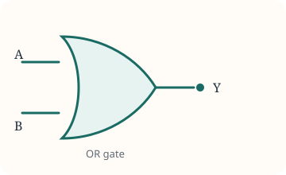

Logic gates
SITE 1101, Group 18, CRN 10425. Four of us built the basic gates and put the result in one video.
My part was the time registration, the educational resources the group used, and the OR gate. The output is 1 when at least one input is 1.
| A | B | Y |
|---|---|---|
| 0 | 0 | 0 |
| 0 | 1 | 1 |
| 1 | 0 | 1 |
| 1 | 1 | 1 |